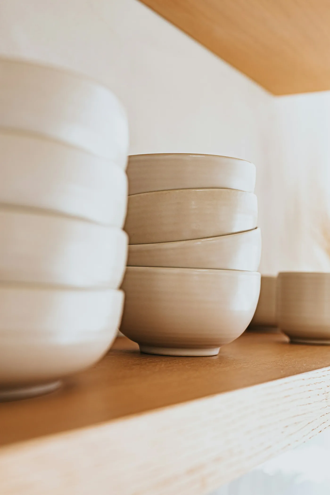
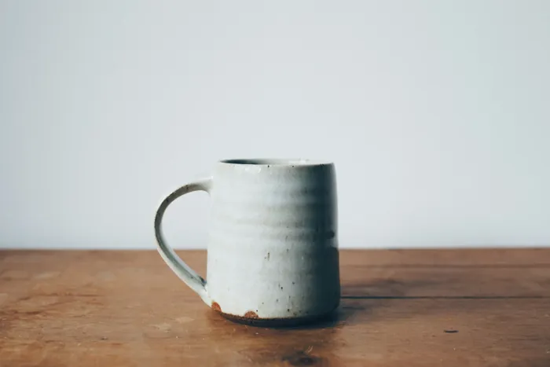
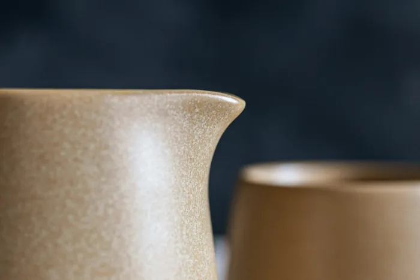
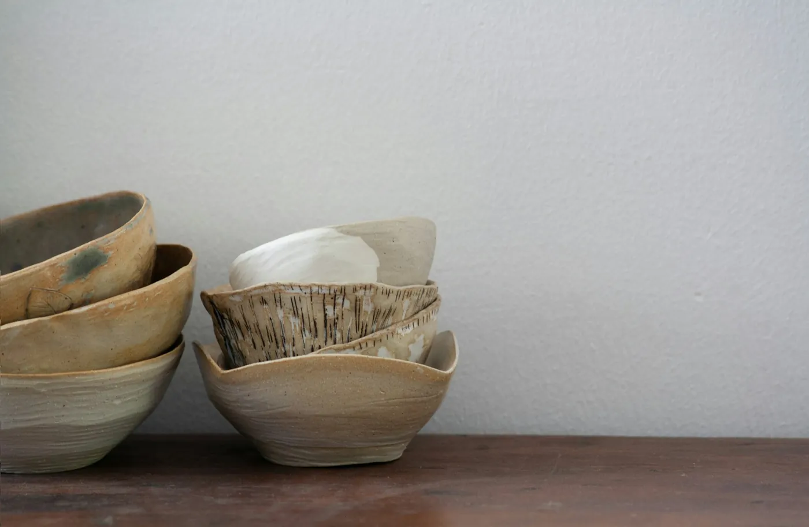
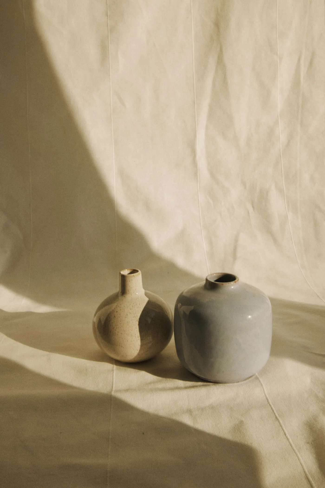
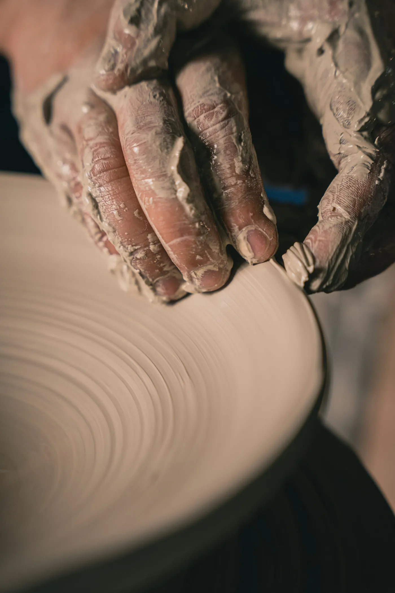
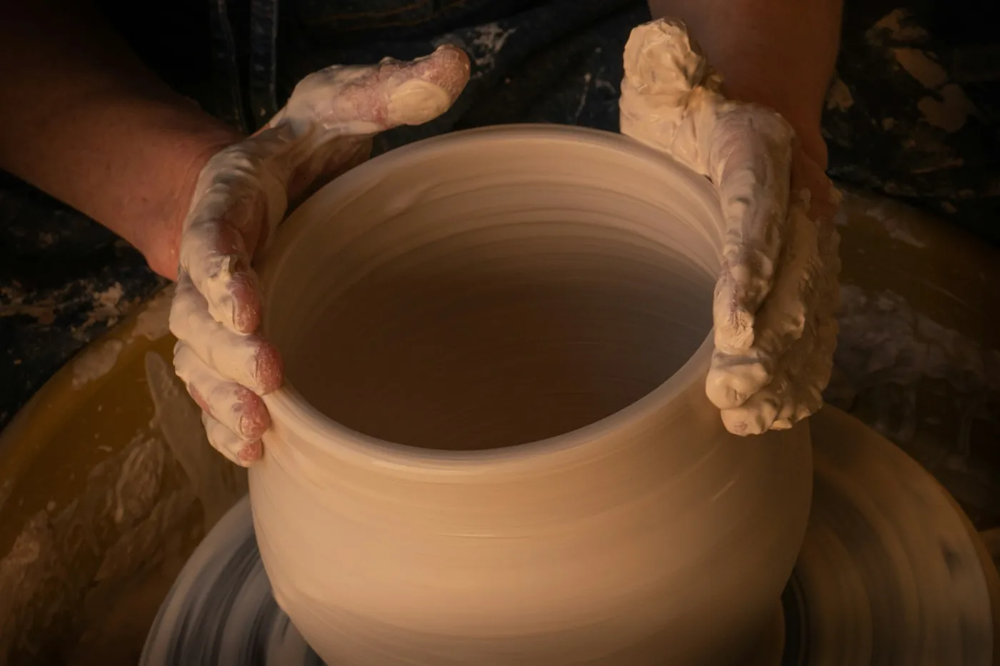
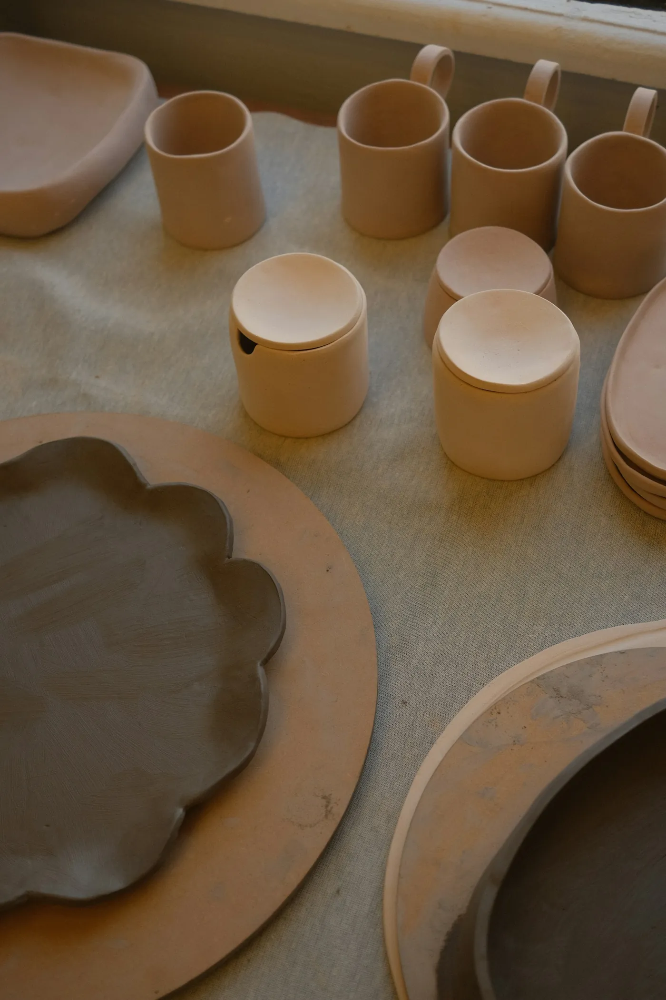
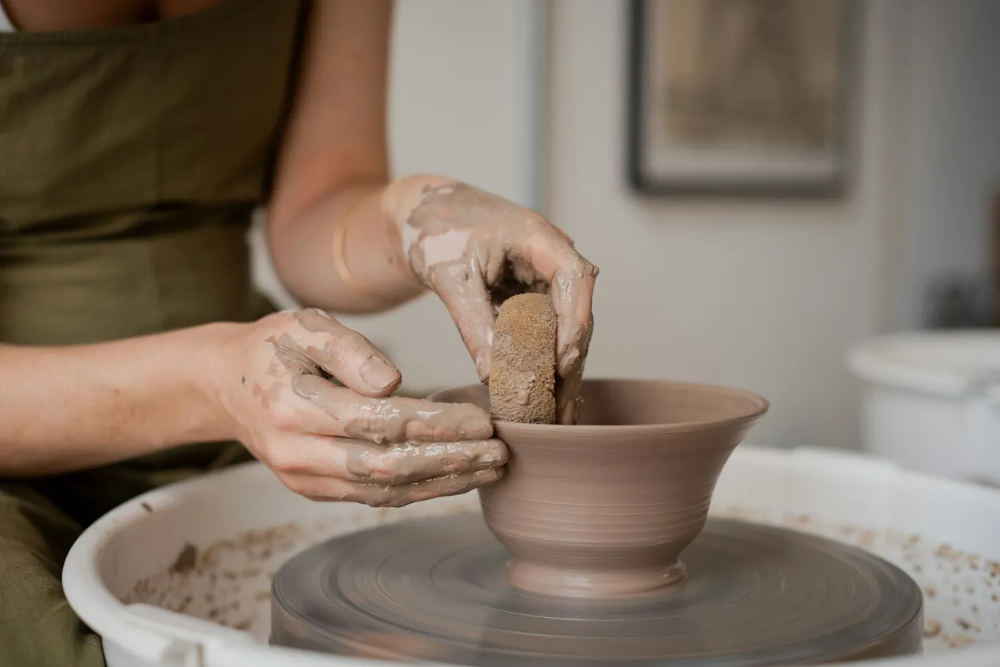

Une étagère de l’atelier, la veille d’une expédition.
De la vaisselle en grès, tournée à la main pour servir tous les jours.
Ourlé est un atelier de poterie à Saint-Amand-en-Puisaye. Nous tournons, émaillons et cuisons chaque pièce nous-mêmes, puis nous l’expédions depuis l’atelier, emballée dans du papier kraft.
Sorti du four le 4 novembre
Fournée n° 23- Bol CrèmeBol28 €
- Assiette OurléeAssiette plate38 €

Tasse mouchetéeTasse32 €
Pichet mouchetéPichet62 €
Livraison 6,90 €, offerte dès 90 €. Retours sous 14 jours.
- Grès cuit à 1 280 °CIl ne boit pas l’eau et résiste aux chocs du quotidien.
- Lave-vaisselle et micro-ondesPour toute la vaisselle, sans exception.
- Pièce cassée, pièce remplacéeUne photo sous 48 heures suffit.
- 14 jours pour changer d’avisRemboursement du prix et de la livraison.
Trois familles de pièces. Toutes en grès de Puisaye, une terre cuite à haute température qui devient aussi dure que la pierre.
 La tableAssiettes, saladier et pichet pour les repas de tous les jours. Tout va au lave-vaisselle et au micro-ondes.
4 pièces
La tableAssiettes, saladier et pichet pour les repas de tous les jours. Tout va au lave-vaisselle et au micro-ondes.
4 pièces

Bols et tassesPour le café du matin, la soupe du soir et tout ce qui se mange à la cuillère. 3 pièces
VasesDu soliflore à la grande jarre. L’intérieur est toujours émaillé : tous nos vases tiennent l’eau. 3 piècesCe qui est en stock à l’atelier. Cinq pièces de la dernière fournée.
Toutes les pièces



ourlé adjectif
Se dit d’un bord roulé sur lui-même pour le rendre plus solide.
Nous finissons ainsi le bord de nos bols et de nos tasses, du bout des doigts, pendant que le tour ralentit. Le bord gagne en épaisseur sans alourdir la pièce, il s’ébrèche moins au lave-vaisselle, et il reste doux sous les lèvres.
Voir le bol CrèmeCinq semaines entre la motte de terre et votre table.
Nous sommes deux potiers et un four à gaz de 300 litres. Une fournée sort à peu près tous les mois ; ce que vous voyez sur la boutique est ce qui reste de la dernière.



- Jour 1
Tournage
La terre est pesée, centrée sur le tour, puis montée. Un bol demande 450 g de grès, une assiette 1,2 kg.
- Jour 2
Tournassage
Quand la terre a la consistance du cuir, nous retournons la pièce pour creuser le pied et roulons le bord.
- 2 à 3 semaines
Séchage
Les pièces sèchent lentement sous un linge. Trop vite, elles se fendent au four.
- Semaine 3
Biscuit
Une première cuisson à 980 °C durcit la terre sans la fermer, pour qu’elle accepte l’émail.
- Semaine 4
Émaillage
Nous préparons nos émaux à l’atelier et trempons chaque pièce à la main, en essuyant le pied.
- Semaine 5
Grand feu
Douze heures de montée jusqu’à 1 280 °C, puis une journée de refroidissement, four fermé.
Ce que coûte la livraison, et comment votre colis voyage. Les frais, les délais et l’emballage, avant même d’ouvrir le panier.
| Mode | Délai après expédition | Prix |
|---|---|---|
| Colissimo à domicile | 2 à 3 jours ouvrés | 6,90 €, offert dès 90 € |
| En point relais | 3 à 5 jours ouvrés | 4,50 €, offert dès 90 € |
| Retrait à l’atelier | Le samedi, sur avis de notre part | Gratuit |
Expédition sous 3 jours ouvrés. Le vase Jarre part sous 5 jours ouvrés, le temps de lui préparer une double caisse.
Sans plastique. Chaque pièce est roulée dans du papier kraft, calée de papier froissé dans un carton double cannelure.
Europe. Nous livrons la Belgique, la Suisse et l’Allemagne ; le prix s’affiche à l’étape de livraison.
Les questions qu’on nous pose au marché.
Est-ce que tout va au lave-vaisselle ?
Oui, toute notre vaisselle va au lave-vaisselle et au micro-ondes. Le grès cuit à 1 280 °C ne boit pas l’eau. Nos vases ne sont pas faits pour la vaisselle, mais l’intérieur est émaillé et ils tiennent l’eau.
Ma pièce sera-t-elle identique à la photo ?
Elle lui ressemblera de près, sans être la même. Chaque pièce est tournée à la main : les dimensions varient de quelques millimètres et l’émail change un peu d’une cuisson à l’autre. Les photos montrent des pièces de nos fournées.
Que se passe-t-il si une pièce arrive cassée ?
Envoyez-nous une photo du colis et de la pièce dans les 48 heures suivant la livraison. Nous vous renvoyons une pièce équivalente ou nous vous remboursons, à votre choix, sans vous demander de retourner les morceaux.
Puis-je renvoyer une pièce si elle ne me convient pas ?
Oui. Vous avez 14 jours après la réception pour nous dire que vous changez d’avis, puis 14 jours pour nous renvoyer la pièce. Nous vous remboursons le prix et les frais de livraison au tarif standard dès que nous la recevons. Le retour reste à votre charge.
Peut-on venir chercher sa commande à l’atelier ?
Oui, le retrait à l’atelier est gratuit. Choisissez-le à l’étape de livraison ; nous vous écrivons quand la commande est prête, et vous passez le samedi, de 10 h à 18 h.
Une table qui se monte pièce par pièce.
Commencez par un bol ou deux assiettes, et complétez à la fournée suivante : nous gardons les mêmes émaux d’une année sur l’autre.
Voir toutes les pièces